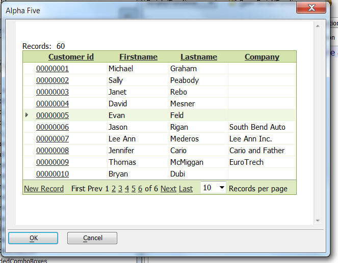

Action Scripting - Xdialog Genie
The Xdialog Genie in Action scripting has several powerful new controls.
Cascading dropdown boxes - For example, define a series of dropdown boxes that display State names, Cities within the selected State, Companies within the selected City, and finally Lastnames within the selected Company.
Dynamic trees - For example a tree control that shows a list of States. Expand a particular State and then show the list of Cities in that state, and so on, up to any depth that you want. Since the tree is not fully populated when it is displayed initially (only the states are fetched from the database), it is extremely fast, regardless of how large the table that you are working with.
Grid Component - This allows you to insert a Web Grid Component into an Xdialog. The Application Server does not have to be running in order to run the Grid Component. The image below shows an Xdialog with an embedded Grid Component.
